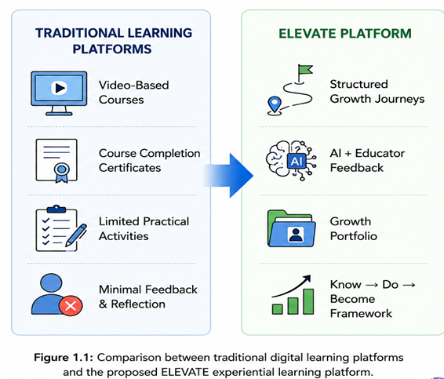
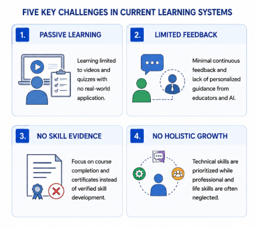
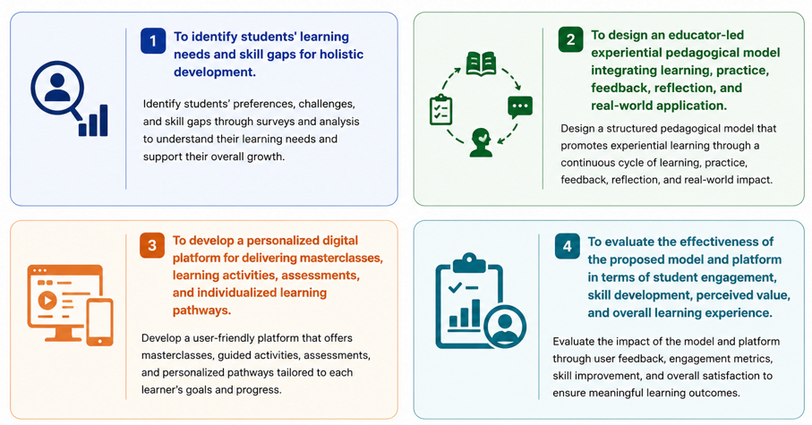
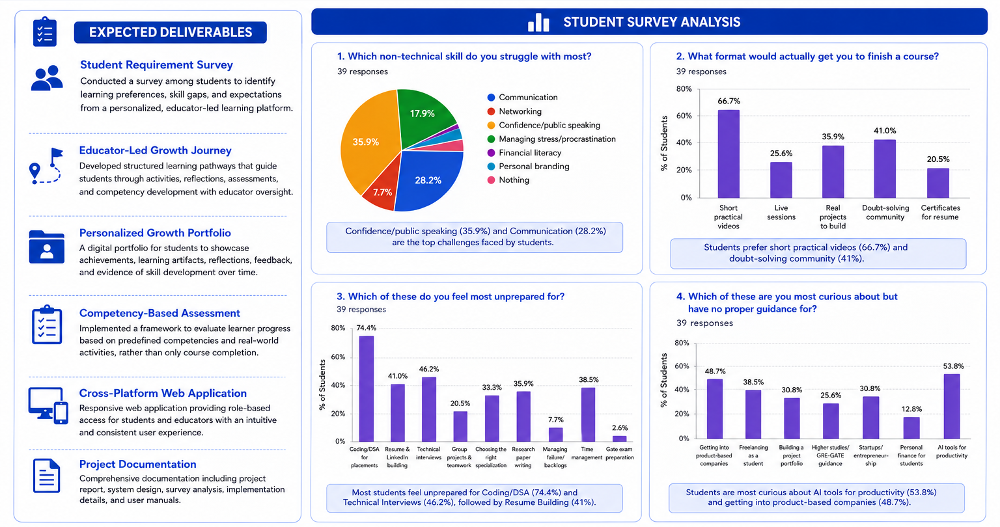
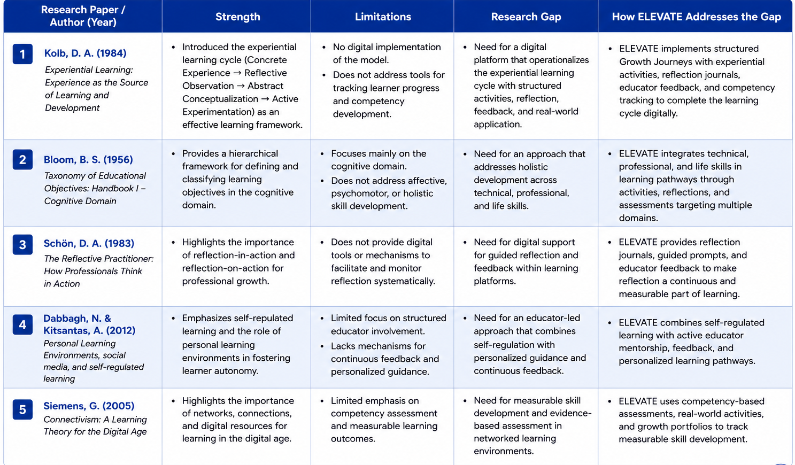
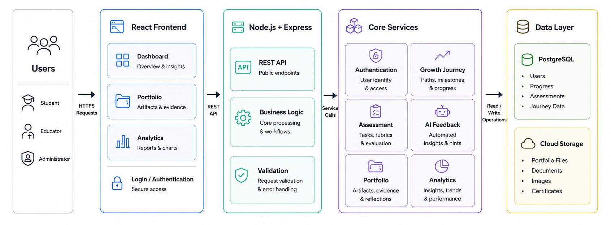
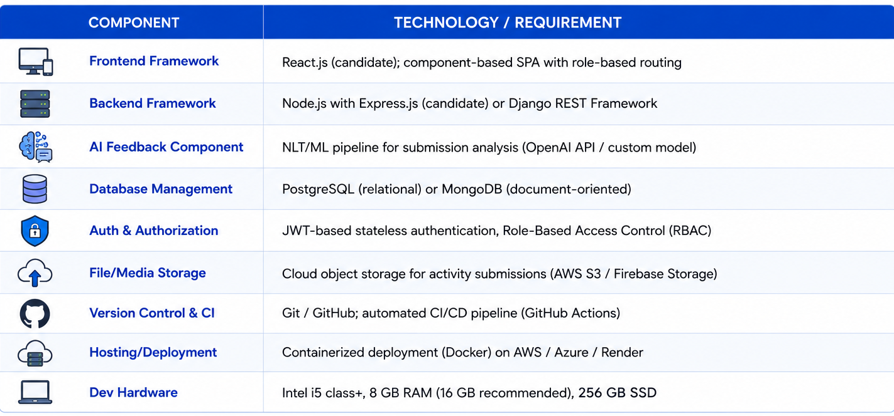

| Sr. | Name of Student | Roll No. |
|---|---|---|
| 1. | Kabir Shitalkumar Patil | B-26 |
| 2. | Alok Shriniwas Perla | B-34 |
| 3. | Vidhi Jatinbhai Patel | B-23 |
| 4. | Rudraksh Rahul Vaidya | B-61 |
The rapid expansion of digital infrastructure has fundamentally transformed the delivery of education and professional development. Modern learners expect flexible, personalized, and outcome-focused learning experiences that extend well beyond the passive consumption of recorded lectures. However, a persistent gap exists in the learning technology ecosystem: most platforms are either large-scale multi-vendor marketplaces optimized for content discovery, or heavyweight enterprise Learning Management Systems (LMS) that replicate the passive, content-centric model of traditional classrooms in digital form.
This project addresses that gap by proposing both a new pedagogical model and the digital platform that implements it. The pedagogical model — ELEVATE (Educator-Led Experiential Value and Life-skills Advancement Through Engagement) — is a six-stage structured learning framework grounded in experiential learning, mastery learning, and reflective practice. The platform serves as the implementation vehicle, enabling a single organizational content authority to design, deliver, and evaluate skill-development journeys for its learners.
The central departure from conventional LMS design is the unit of learning. Traditional platforms organize content into courses composed of video lessons and quizzes; the ELEVATE platform organizes content into Growth Journeys — structured sequences moving the learner from diagnostic self-assessment through educator-led instruction, experiential activity, multi-source feedback, authentic application, and reflective portfolio construction. The output is not a completion certificate but a documented, measurable evidence portfolio of skill development.
The platform is domain-agnostic: the underlying data model supports academic instruction, professional certification, technical upskilling, and general life-skill development, since the ELEVATE pedagogical stages are invariant across content domains. Figure 1.1 illustrates the key distinction between traditional learning platforms and the proposed ELEVATE approach.

Engineering and professional education has long recognized a structural deficiency: the curriculum delivers technical knowledge but rarely develops the life skills, communication competencies, and professional capabilities that determine real-world success. Employer surveys consistently indicate that graduates are technically prepared but deficient in communication, leadership, critical thinking, and professional presence. Existing learning platforms fail to address this gap for the following reasons:
Learning is limited to videos and quizzes with minimal practical application. There is no mechanism for the learner to practise, receive structured feedback, or demonstrate applied competence.
Students have limited opportunities to learn through guided activities, reflection, and hands-on experiences. No mainstream platform provides a structured activity-challenge-feedback cycle.
Most platforms provide generic assessments without continuous mentoring or individualized guidance. Educator insight is absent from the learning journey in most self-paced platforms.
Course completion certificates do not demonstrate practical competencies. There is no platform-level mechanism to measure whether a learner has improved, and by how much, across a defined skill dimension.
Technical knowledge is prioritized while communication, leadership, teamwork, and life skills receive limited attention. The prevalent model is binary — a learner has either completed a course or not — providing no information about the depth, quality, or trajectory of learning.

The problem is therefore not merely technological but pedagogical: there is a need for a platform built on an educationally principled model that moves beyond content delivery to structured, measurable, experiential growth.
The following four primary objectives, as approved and presented in the final synopsis presentation, define the scope and intent of this project:

The objectives, formally stated, are as follows:
A structured survey was conducted among 39 student respondents to identify learning preferences, skill gaps, and expectations from a personalized, educator-led learning platform. The findings directly informed the design of the ELEVATE model and platform features.

Key Survey Findings:
These findings validate the need for a structured, educator-led experiential platform addressing life-skill development, technical preparedness, and personalized guidance — precisely the problem space ELEVATE is designed to solve.
Learning delivery systems in current use can be classified into two principal categories, neither of which satisfactorily addresses the pedagogical requirements of this project:
The following table presents a structured review of key foundational works in IEEE format, their strengths, limitations, identified research gaps, and how ELEVATE addresses each gap:
| # | Research Paper / Author (Year) | Strength | Limitations | Research Gap | How ELEVATE Addresses the Gap |
|---|---|---|---|---|---|
| [1] | Kolb, D. A. (1984) Experiential Learning: Experience as the Source of Learning and Development |
Introduced the experiential learning cycle (Concrete Experience → Reflective Observation → Abstract Conceptualization → Active Experimentation). | No digital implementation. Does not address tools for tracking learner progress and competency development. | Need for a digital platform that operationalizes the experiential learning cycle with structured activities, reflection, and feedback. | ELEVATE implements Growth Journeys with experiential activities, reflection journals, educator feedback, and competency tracking. |
| [2] | Bloom, B. S. (1956) Taxonomy of Educational Objectives: Handbook I – Cognitive Domain |
Provides a hierarchical framework for classifying learning objectives in the cognitive domain. | Focuses mainly on the cognitive domain. Does not address affective, psychomotor, or holistic skill development. | Need for an approach that addresses holistic development across technical, professional, and life skills. | ELEVATE integrates technical, professional, and life skills in learning pathways through activities targeting multiple skill domains. |
| [3] | Schön, D. A. (1983) The Reflective Practitioner: How Professionals Think in Action |
Highlights the importance of reflection-in-action and reflection-on-action for professional growth. | Does not provide digital tools or mechanisms to facilitate and monitor reflection systematically. | Need for digital support for guided reflection and feedback within learning platforms. | ELEVATE provides reflection journals, guided prompts, and educator feedback, making reflection a continuous and measurable part of learning (Transform stage). |
| [4] | Dabbagh & Kitsantas (2012) Personal Learning Environments, Social Media, and Self-Regulated Learning The Internet and Higher Education, vol. 15, no. 1, pp. 3–8 |
Emphasizes self-regulated learning and the role of personal learning environments in fostering learner autonomy. | Limited focus on structured educator involvement. Lacks mechanisms for continuous feedback and personalized guidance. | Need for an educator-led approach combining self-regulation with personalized guidance and continuous feedback. | ELEVATE combines self-regulated learning with active educator mentorship, feedback, and personalized learning pathways. |
| [5] | Siemens, G. (2005) Connectivism: A Learning Theory for the Digital Age Int'l Journal of Instructional Technology & Distance Learning, vol. 2, no. 1 |
Highlights the importance of networks, connections, and digital resources for learning in the digital age. | Limited emphasis on competency assessment and measurable learning outcomes. | Need for measurable skill development and evidence-based assessment in networked learning environments. | ELEVATE uses competency-based assessments, real-world activities, and growth portfolios to track measurable skill development. |
| [6] | Hattie & Timperley (2007) The Power of Feedback Review of Educational Research, vol. 77, no. 1, pp. 81–112 |
Establishes that timely, specific feedback is among the most impactful teaching interventions; provides a comprehensive feedback framework. | Focuses on theoretical models; does not address automated or AI-assisted feedback mechanisms. | Need for scalable, real-time, structured feedback mechanisms that deliver educator-quality feedback at scale. | ELEVATE's multi-source feedback pipeline (AI + educator rubric + peer review) operationalizes the power of feedback at platform scale. |
| [7] | Ifenthaler & Yau (2020) Utilizing Learning Analytics to Support Study Success in Higher Education ETR&D, vol. 68, no. 4, pp. 1961–1973 |
Demonstrates that learning analytics significantly improve student outcomes when used for personalized support and early intervention. | Focuses on institutional-level analytics; learner-facing dashboards and individual growth tracking remain underexplored. | Need for learner-facing growth analytics dashboards embedded within the learning journey itself. | ELEVATE's Progress Dashboard and Growth Portfolio give learners real-time visibility into their learning trajectory and skill development evidence. |

The academic literature and commercial product landscape together reveal a consistent gap: no existing platform combines (a) an educator-led, six-stage experiential pedagogical model, (b) AI-assisted multi-source feedback on practice submissions, and (c) a Growth Portfolio as the primary learning artifact, within a single organizational platform designed for life-skill and professional development. This project directly addresses that gap.
ELEVATE structures every Growth Journey into six sequential pedagogical stages. Unlike a course-and-lesson hierarchy, a Growth Journey is a unit of measurable skill development with a defined entry state (Learner Growth Profile from the diagnostic), a structured progression through six stages, and a defined exit artifact (the Growth Portfolio).
Before beginning a Growth Journey, the learner completes a structured diagnostic assessment establishing the Learner Growth Profile — capturing current competency level, prior experience, hesitation areas, and personal goals — providing a measurable baseline for pre/post comparison.
Rather than passive hour-long video lectures, the Learn stage delivers focused 8–15 minute educator-led learning capsules: concept demonstrations, experience-based stories, practical frameworks, and case situations, authored and curated by the organizational educator.
Every learning capsule is followed by an activity challenge requiring the learner to perform the skill, not merely understand it. Activity submissions may be video recordings, written documents, or structured responses depending on the skill domain.
Submitted activities are assessed through a multi-source feedback pipeline: AI-assisted analysis (structure, clarity, pacing, language quality), educator rubric scoring, and optional peer feedback. Learners may iterate on their submission before advancing, consistent with the mastery learning principle.
The learner transitions from practice activity to an authentic, real-world application. This stage closes the gap between classroom practice and real-world demonstration (e.g., updating a professional profile after a personal branding learning capsule).
The learner reflects on their journey and curates a Growth Portfolio: before-state diagnostic results, activity submissions, feedback received, revisions made, final artifact, and self-reflection. The portfolio becomes the primary credential artifact, demonstrably stronger than a completion certificate.
Every Growth Journey measures learner progress across three dimensions, applied through pre- and post-journey assessments:
Conceptual Understanding
Measured through pre- and post-diagnostic assessments, quiz scores, and concept checks.
Demonstrated Performance
Measured through activity challenge submissions evaluated against the educator rubric.
Measurable Behavioral Growth
Measured through before/after portfolio comparison, final artifact quality, and rubric improvement scores across iterations.
The platform follows a client-server architecture with clear separation between the Learner Module and the Administrative Module, communicating through a RESTful API layer. The system is designed as a modular monolith with a componentized React.js SPA frontend, Node.js + Express.js backend, a core services layer (Authentication, Growth Journey, Assessment, AI Feedback, Portfolio, Analytics), and a persistent data layer (PostgreSQL + Cloud Storage).

| Architecture Layer | Components & Responsibilities |
|---|---|
| Users (Roles) | Student, Educator, Administrator — accessed via HTTPS Requests |
| React Frontend (SPA) | Dashboard (Overview & Insights), Portfolio (Artifacts & Evidence), Analytics (Reports & Charts), Login / Authentication (Secure Access) |
| Node.js + Express | REST API (Public Endpoints), Business Logic (Core Processing & Workflows), Validation (Request Validation & Error Handling) |
| Core Services | Authentication (User Identity & Access), Growth Journey (Paths, Milestones & Progress), Assessment (Tasks, Rubrics & Evaluation), AI Feedback (Automated Insights & Hints), Portfolio (Artifacts, Evidence & Reflections), Analytics (Insights, Trends & Performance) |
| Data Layer | PostgreSQL: Users, Progress, Assessments, Journey Data | Cloud Storage: Portfolio Files, Documents, Images, Certificates |
Development will proceed under an iterative, phase-wise methodology aligned to the ELEVATE model's architectural layers:

| Component | Technology / Requirement |
|---|---|
| Operating System | Windows 10/11, macOS, or Linux (development); Linux-based container image (deployment) |
| Programming Architecture | Client-server; RESTful API-based modular monolith; componentized frontend (SPA) |
| Frontend Framework | React.js; component-based SPA with role-based routing |
| Backend Framework | Node.js with Express.js; alternative: Django REST Framework (Python) |
| AI Feedback Component | NLP/ML pipeline for submission analysis (OpenAI API or custom model) |
| Database Management | PostgreSQL (relational) or MongoDB (document-oriented), selected in detailed design |
| Auth & Authorization | JWT-based stateless authentication; Role-Based Access Control (RBAC) — Learner / Educator / Admin |
| File/Media Storage | Cloud object storage for activity submissions (AWS S3 / Firebase Storage) |
| Version Control & CI/CD | Git / GitHub; automated build/test pipeline (GitHub Actions) |
| Hosting / Deployment | Containerized deployment (Docker) on cloud IaaS/PaaS (AWS / Azure / Render) |
| Development Hardware | Intel i5-class or higher; 8 GB RAM minimum (16 GB recommended); 256 GB SSD |
References are formatted in accordance with the IEEE Citation Style.